pacman::p_load(sf, spatstat, sparr, stpp, spNetwork, terra, tmap, tidyverse, lubridate)
set.seed(1234)Take-home Exercise 1: Geospatial Analytics for Public Safety
Spatial and Spatio-temporal Point Patterns of Road Traffic Accidents in the Bangkok Metropolitan Region, 2022
1. Introduction
Road traffic crashes are a major public-safety problem in Thailand. WHO estimates about 18,218 road deaths in 2021, a rate of 25.4 per 100,000 population and one of the highest in Asia, with motorcyclists accounting for most deaths. The Bangkok Metropolitan Region (BMR), comprising Bangkok and five vicinity provinces, is the country’s largest urban area, where crash patterns are likely to vary strongly across space and time. However, a concentration of crashes does not necessarily mean higher risk, as it may also reflect traffic volume, road density or how crashes are recorded. This study analyses road traffic accidents in BMR in 2022 using spatial and spatio-temporal point-pattern analysis. First-order analysis examines where and when accident intensity is highest; second-order analysis tests whether accidents cluster beyond this uneven intensity. A network-constrained analysis then checks whether these conclusions hold when accidents are restricted to the road network.
1.1 Research questions
- Where and when are road traffic accidents in BMR concentrated in 2022? (first-order)
- After accounting for this uneven intensity, do accidents show evidence of clustering, inhibition or approximate randomness? (second-order)
- Do the conclusions change when the analysis is constrained to the road network? (value-added)
2. Getting Started
A fixed random seed is set at the start so that jittering and all Monte Carlo simulations give the same results each time the report is rendered.
3. The Data
| Dataset | Source | Format | Accessed | Coverage |
|---|---|---|---|---|
| Thailand Road Accident [2019-2022] | Kaggle (Thaweewat R.) | CSV | 2026-09-23 | Thailand, 2019-2022 (2022 used) |
| Thailand ADM1 boundaries | geoBoundaries | Shapefile | 2026-09-23 | Thailand provinces |
| OpenStreetMap roads | Geofabrik (extract 2026-09-21) | Shapefile | 2026-09-22 | Thailand |
3.1 Study area: Bangkok Metropolitan Region (BMR)
BMR is operationalised as Bangkok plus its five vicinity provinces, taken from the full-resolution geoBoundaries ADM1 layer (not the simplified version, to avoid wrongly dropping accidents near provincial borders and the coastline).
st_read(dsn = "data/geospatial",
layer = "geoBoundaries-THA-ADM1",
quiet = TRUE)$shapeName %>%
sort() [1] "Amnat Charoen Province" "Ang Thong Province"
[3] "Bangkok" "Bueng Kan Province"
[5] "Buri Ram Province" "Chachoengsao Province"
[7] "Chai Nat Province" "Chaiyaphum Province"
[9] "Chanthaburi Province" "Chiang Mai Province"
[11] "Chiang Rai Province" "Chon Buri Province"
[13] "Chumphon Province" "Kalasin"
[15] "Kamphaeng Phet Province" "Kanchanaburi Province"
[17] "Khon Kaen Province" "Krabi Province"
[19] "Lampang Province" "Lamphun Province"
[21] "Loei Province" "Lopburi Province"
[23] "Mae Hong Son Province" "Maha Sarakham Province"
[25] "Mukdahan Province" "Nakhon Nayok Province"
[27] "Nakhon Pathom Province" "Nakhon Phanom Province"
[29] "Nakhon Ratchasima Province" "Nakhon Sawan Province"
[31] "Nakhon Si Thammarat Province" "Nan Province"
[33] "Narathiwat Province" "Nong Bua Lam Phu Province"
[35] "Nong Khai Province" "Nonthaburi Province"
[37] "Pathum Thani Province" "Pattani Province"
[39] "Phangnga Province" "Phatthalung Province"
[41] "Phayao Province" "Phetchabun Province"
[43] "Phetchaburi Province" "Phichit Province"
[45] "Phitsanulok Province" "Phra Nakhon Si Ayutthaya Province"
[47] "Phrae Province" "Phuket Province"
[49] "Prachin Buri Province" "Prachuap Khiri Khan Province"
[51] "Ranong Province" "Ratchaburi Province"
[53] "Rayong Province" "Roi Et Province"
[55] "Sa Kaeo Province" "Sakon Nakhon Province"
[57] "Samut Prakan Province" "Samut Sakhon Province"
[59] "Samut Songkhram Province" "Saraburi Province"
[61] "Satun Province" "Si Sa Ket Province"
[63] "Sing Buri Province" "Songkhla Province"
[65] "Sukhothai Province" "Suphan Buri Province"
[67] "Surat Thani Province" "Surin Province"
[69] "Tak Province" "Trang Province"
[71] "Trat Province" "Ubon Ratchathani Province"
[73] "Udon Thani Province" "Uthai Thani Province"
[75] "Uttaradit Province" "Yala Province"
[77] "Yasothon Province" bmr_names <- c("Bangkok", "Nonthaburi Province", "Nakhon Pathom Province",
"Pathum Thani Province", "Samut Prakan Province",
"Samut Sakhon Province")
bmr_sf <- st_read(dsn = "data/geospatial",
layer = "geoBoundaries-THA-ADM1") %>%
filter(shapeName %in% bmr_names) %>%
mutate(shapeName = str_remove(shapeName, " Province")) %>%
st_transform(crs = 32647)Reading layer `geoBoundaries-THA-ADM1' from data source
`/Users/wangxiaohan/ISSS626-GAA/Take-home_Ex/Take-home_Ex01/data/geospatial'
using driver `ESRI Shapefile'
Simple feature collection with 77 features and 5 fields
Geometry type: MULTIPOLYGON
Dimension: XY
Bounding box: xmin: 97.34381 ymin: 5.612851 xmax: 105.6368 ymax: 20.46483
Geodetic CRS: WGS 84nrow(bmr_sf) [1] 6st_crs(bmr_sf)$epsg [1] 32647any(!st_is_valid(bmr_sf))[1] FALSEbmr_sf <- st_make_valid(bmr_sf)
bmr_union <- bmr_sf %>%
st_union()3.2 Road accident data
acc_raw <- read_csv("data/aspatial/thai_road_accident_2019_2022.csv",
show_col_types = FALSE)
glimpse(acc_raw)Rows: 81,735
Columns: 18
$ acc_code <dbl> 571905, 3790870, 599075, 571924, 599523, 5…
$ incident_datetime <dttm> 2019-01-01 00:00:00, 2019-01-01 00:03:00,…
$ report_datetime <dttm> 2019-01-02 06:11:00, 2020-02-20 13:48:00,…
$ province_th <chr> "ลพบุรี", "อุบลราชธานี", "ประจวบคีรีขันธ์", "เชียงใ…
$ province_en <chr> "Loburi", "Ubon Ratchathani", "Prachuap Kh…
$ agency <chr> "department of rural roads", "department o…
$ route <chr> "แยกทางหลวงหมายเลข 21 (กม.ที่ 31+000) - บ้านวั…
$ vehicle_type <chr> "motorcycle", "private/passenger car", "mo…
$ presumed_cause <chr> "driving under the influence of alcohol", …
$ accident_type <chr> "other", "rollover/fallen on straight road…
$ number_of_vehicles_involved <dbl> 1, 1, 2, 1, 1, 1, 2, 2, 2, 2, 1, 1, 1, 1, …
$ number_of_fatalities <dbl> 0, 0, 1, 0, 0, 0, 0, 1, 3, 0, 0, 1, 0, 0, …
$ number_of_injuries <dbl> 2, 2, 0, 1, 0, 2, 2, 0, 0, 1, 1, 0, 1, 1, …
$ weather_condition <chr> "clear", "clear", "clear", "clear", "clear…
$ latitude <dbl> 14.959105, 15.210738, 12.374259, 18.601721…
$ longitude <dbl> 100.87346, 104.86269, 99.90795, 98.80420, …
$ road_description <chr> "straight road", "straight road", "wide cu…
$ slope_description <chr> "no slope", "no slope", "slope area", "no …4. Study Design
4.1 Point event definition
A point event is one recorded road traffic accident (one unique acc_code) that occurred between 1 January and 31 December 2022, located by its reported longitude and latitude, and falling inside BMR. Events are treated as an unmarked point pattern: attributes such as fatalities or vehicle type are not used as weights.
| Issue | Handling | Section |
|---|---|---|
| Duplicate records | Removed by unique acc_code |
5.3 |
| Repeated locations | Jittered with rjitter() |
5.9 |
| Missing coordinates | Removed | 5.2 |
| Swapped lat/long | Corrected | 5.2 |
| Coordinates outside Thailand | Removed | 5.2 |
| Outside BMR | Removed with st_filter() |
5.4 |
| Outside 2022 | Removed | 5.1 |
| Recorded province differs from location | Checked and reported | 5.5 |
4.2 Spatial and temporal study window
| Item | Decision | Justification |
|---|---|---|
| Spatial window | Union of 6 BMR provinces | Operationalises “Bangkok Greater Metropolitan Area” with official provincial boundaries, giving a clear and reproducible extent |
| Temporal window | 1 Jan - 31 Dec 2022 | Required by the brief for the 2019-2022 dataset |
| Temporal unit | Month (STKDE, 6.7); day of year (STKDE, 6.8 and 7.6); day and hour (graphics) | Months give enough events per slice; day of year allows data-driven temporal bandwidths; day and hour reveal holiday and daily cycles |
4.3 Methodological decisions
| Decision | Choice | Justification |
|---|---|---|
| CRS | WGS 84 / UTM 47N (EPSG:32647) | Metric units for bandwidth and distance; zone 47N covers Bangkok |
| KDE kernel | Gaussian | Standard smooth kernel; results depend far more on bandwidth than on kernel choice |
| KDE bandwidth | Compared bw.diggle, bw.ppl, bw.scott, fixed 0.5-5 km, adaptive | Bandwidth controls the level of detail, so sensitivity is tested (Section 6) |
| Distance range | 0-10 km | Covers junction- to district-scale interaction while staying well below the width of BMR |
| Edge correction | Border (CSR tests); modified border (inhomogeneous tests) | Border is fast for thousands of points; the modified border is spatstat’s primary estimate for Linhom |
| Simulations | 99 (CSR), 39 (inhomogeneous) | Global envelopes with rank 1 give α = 0.01 and α = 0.025 respectively |
| Null models | CSR; inhomogeneous Poisson | CSR as a baseline; inhomogeneous Poisson separates interaction from uneven intensity (Section 7) |
4.4 Analytical assumptions
| Method | Key assumption | Reasonable here? |
|---|---|---|
| KDE | Accidents can occur anywhere in the window | No: accidents occur only on roads, so planar KDE spreads intensity into areas with no roads (addressed in Section 8) |
| L-function vs CSR | Constant intensity across BMR | No: intensity clearly varies, so clustering under CSR may just reflect uneven intensity |
| Inhomogeneous L-function | KDE correctly estimates the true intensity | Partly: results depend on bandwidth, so two bandwidths are compared |
| STKDE | Spatial pattern changes smoothly over time | Reasonable for seasonal change, but short holiday peaks are smoothed out (76-day bandwidth in 6.8) |
| Space-time K-function | Constant intensity in space and time | No: like CSR, it cannot separate interaction from uneven intensity |
| All methods | Recorded accidents represent all accidents | No: data come mainly from highway and rural road agencies, so city streets are likely under-recorded |
5. Data Wrangling and Quality Assessment
5.1 Temporal parsing and filtering
as_datetime() is used because it works whether read_csv() has already parsed the column as a date-time or left it as text.
acc_raw <- acc_raw %>%
mutate(incident_datetime = as_datetime(incident_datetime))
sum(is.na(acc_raw$incident_datetime)) [1] 0acc_2022 <- acc_raw %>%
filter(year(incident_datetime) == 2022) %>%
mutate(Date = as_date(incident_datetime)) %>%
mutate(Month_num = month(incident_datetime)) %>%
mutate(Month_fac = month(incident_datetime, label = TRUE, abbr = FALSE)) %>%
mutate(Weekday = wday(incident_datetime, label = TRUE)) %>%
mutate(Hour = hour(incident_datetime))5.2 Missing, swapped and invalid coordinates
sum(is.na(acc_2022$latitude) | is.na(acc_2022$longitude)) [1] 189Records whose latitude and longitude appear to be swapped are corrected rather than dropped.
acc_fixed <- acc_2022 %>%
mutate(swapped = between(latitude, 97, 106) & between(longitude, 5, 21)) %>%
mutate(latitude_fix = if_else(swapped, longitude, latitude),
longitude_fix = if_else(swapped, latitude, longitude))
sum(acc_fixed$swapped, na.rm = TRUE)[1] 0acc_valid <- acc_fixed %>%
filter(!is.na(latitude_fix), !is.na(longitude_fix)) %>%
filter(between(longitude_fix, 97, 106),
between(latitude_fix, 5, 21))5.3 Duplicate records
sum(duplicated(acc_valid$acc_code))[1] 0acc_dedup <- acc_valid %>%
distinct(acc_code, .keep_all = TRUE)5.4 Creating sf object and spatial filtering
acc_sf <- acc_dedup %>%
st_as_sf(coords = c("longitude_fix", "latitude_fix"),
crs = 4326) %>%
st_transform(crs = 32647)
acc_bmr_sf <- acc_sf %>%
st_filter(bmr_union)5.5 Location consistency check
Each point is joined to the province it falls in and compared with the province recorded in the data. distinct() removes duplicate rows created by points lying exactly on a provincial border.
acc_bmr_sf <- acc_bmr_sf %>%
st_join(bmr_sf %>% select(shapeName)) %>%
distinct(acc_code, .keep_all = TRUE) %>%
rename(province_gb = shapeName)
acc_bmr_df <- acc_bmr_sf %>%
st_drop_geometry()
acc_bmr_df %>%
filter(province_en != province_gb) %>%
count(province_en, province_gb, sort = TRUE)# A tibble: 7 × 3
province_en province_gb n
<chr> <chr> <int>
1 Kanchanaburi Nakhon Pathom 4
2 Phra Nakhon Si Ayutthaya Pathum Thani 4
3 Bangkok Samut Prakan 2
4 Nonthaburi Bangkok 1
5 Samut Sakhon Bangkok 1
6 unknown Bangkok 1
7 unknown Pathum Thani 15.6 Data-quality summary
tibble(
step = c("Raw (2019-2022)", "Year 2022", "Valid coordinates",
"After de-duplication", "Inside BMR"),
n = c(nrow(acc_raw), nrow(acc_2022), nrow(acc_valid),
nrow(acc_dedup), nrow(acc_bmr_sf))
)# A tibble: 5 × 2
step n
<chr> <int>
1 Raw (2019-2022) 81735
2 Year 2022 21032
3 Valid coordinates 20843
4 After de-duplication 20843
5 Inside BMR 35995.7 Observation process
acc_bmr_df %>%
count(agency, sort = TRUE)# A tibble: 3 × 2
agency n
<chr> <int>
1 department of highways 2883
2 expressway authority of thailand 470
3 department of rural roads 246::: All 3,599 BMR accidents were reported by national road agencies: the Department of Highways (80.1%), the Expressway Authority of Thailand (13.1%) and the Department of Rural Roads (6.8%). None come from the Bangkok Metropolitan Administration, which manages most local streets in Bangkok. Accidents on these streets are therefore likely under-represented, and concentrations in the following analysis should be read as patterns of recorded accidents on highways, expressways and rural roads, not of all accidents in BMR. :::
5.8 Mapping the geospatial data
tm_shape(bmr_sf) +
tm_polygons(fill = "grey95") +
tm_text("shapeName", size = 0.7) +
tm_shape(acc_bmr_sf) +
tm_dots(size = 0.1, fill = "red") +
tm_title("Road accidents in BMR, 2022")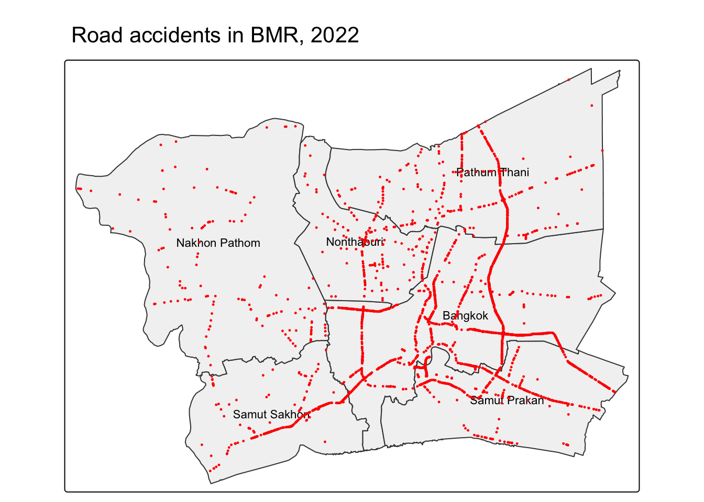
::: The 3,599 recorded accidents are not spread evenly across BMR but align along linear corridors radiating from Bangkok towards Pathum Thani, Samut Prakan and Samut Sakhon, with sparser points in Nakhon Pathom. Inner Bangkok shows relatively few accidents despite its density, consistent with the absence of BMA-managed streets from the data (Section 5.7). This visual concentration does not yet indicate clustering or higher risk: it must be assessed against a reference model (Section 7), and the linear pattern suggests that the road network itself shapes where accidents can occur. :::
tm_shape(bmr_sf) +
tm_polygons(fill = "grey95") +
tm_shape(acc_bmr_sf) +
tm_dots(size = 0.1, fill = "red") +
tm_facets(by = "Month_fac", free.coords = FALSE)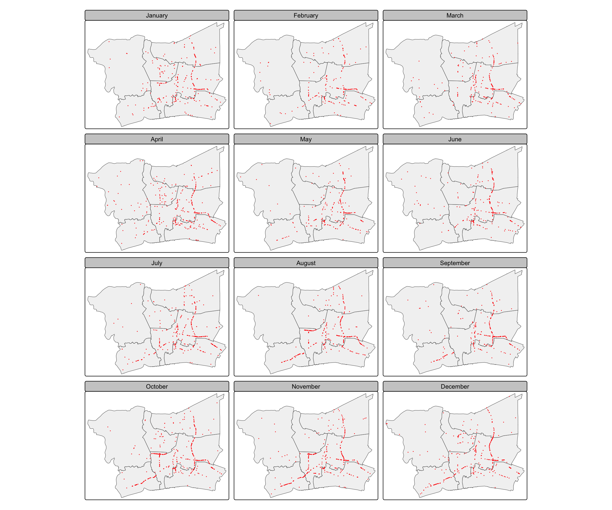
::: Faceting by month shows that accidents occur along the same major corridors throughout 2022, suggesting that the spatial structure of recorded accidents is largely stable over time rather than shifting between areas. Differences in the number of points between months are difficult to judge visually from dot maps; monthly counts (Section 6.1) and spatio-temporal KDE (Section 6.7) are used to assess temporal variation in intensity more rigorously. :::
5.9 Converting to spatstat objects
st_geometry() keeps only the point locations, so the ppp object carries no data-frame marks.
acc_ppp <- as.ppp(st_geometry(acc_bmr_sf))
summary(acc_ppp)Planar point pattern: 3599 points
Average intensity 3.326903e-07 points per square unit
*Pattern contains duplicated points*
Coordinates are given to 10 decimal places
Window: rectangle = [587647.2, 709360] x [1487640.2, 1576520.5] units
(121700 x 88880 units)
Window area = 10817900000 square unitsany(duplicated(acc_ppp))[1] TRUEsum(multiplicity(acc_ppp) > 1)[1] 520acc_ppp_jit <- rjitter(acc_ppp, retry = TRUE, nsim = 1, drop = TRUE)
any(duplicated(acc_ppp_jit))[1] FALSEbmr_owin <- as.owin(bmr_union)
plot(bmr_owin)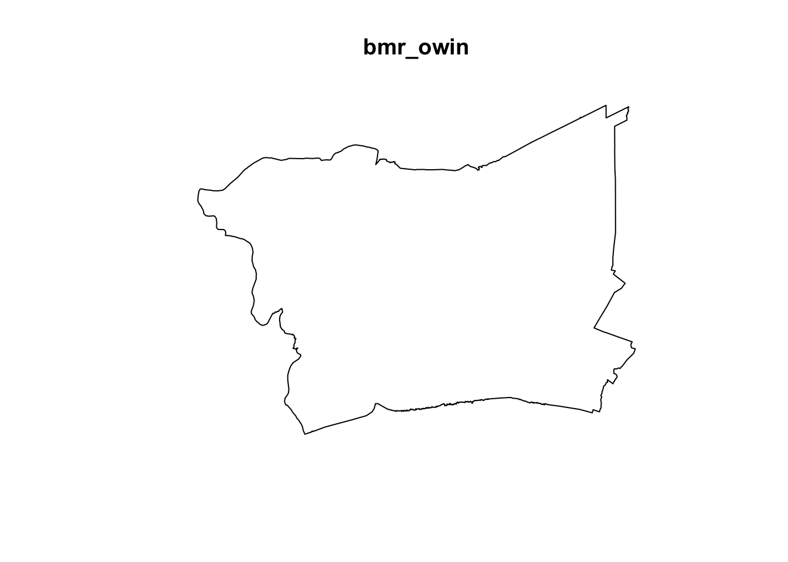
accBMR_ppp <- acc_ppp_jit[bmr_owin]
accBMR_ppp.km <- rescale.ppp(accBMR_ppp, 1000, "km")
summary(accBMR_ppp.km)Planar point pattern: 3598 points
Average intensity 0.4731671 points per square km
Coordinates are given to 13 decimal places
Window: polygonal boundary
single connected closed polygon with 1699 vertices
enclosing rectangle: [587.1304, 712.4417] x [1484.7489, 1579.0872] km
(125.3 x 94.34 km)
Window area = 7604.08 square km
Unit of length: 1 km
Fraction of frame area: 0.643plot(accBMR_ppp.km)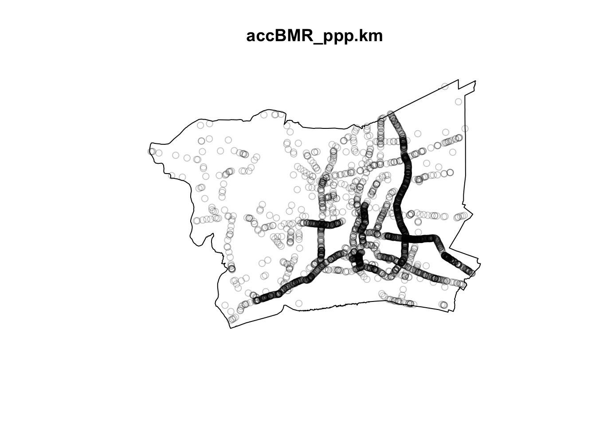
dir.create("data/rds", recursive = TRUE, showWarnings = FALSE)
write_rds(acc_bmr_sf, "data/rds/acc_bmr_sf.rds")
write_rds(accBMR_ppp.km, "data/rds/accBMR_ppp_km.rds")6. First-order Spatial Point Patterns Analysis
6.1 Temporal variation
ggplot(acc_bmr_df, aes(x = Month_fac)) +
geom_bar() +
labs(x = "Month", y = "No. of accidents") +
theme(axis.text.x = element_text(angle = 45, hjust = 1))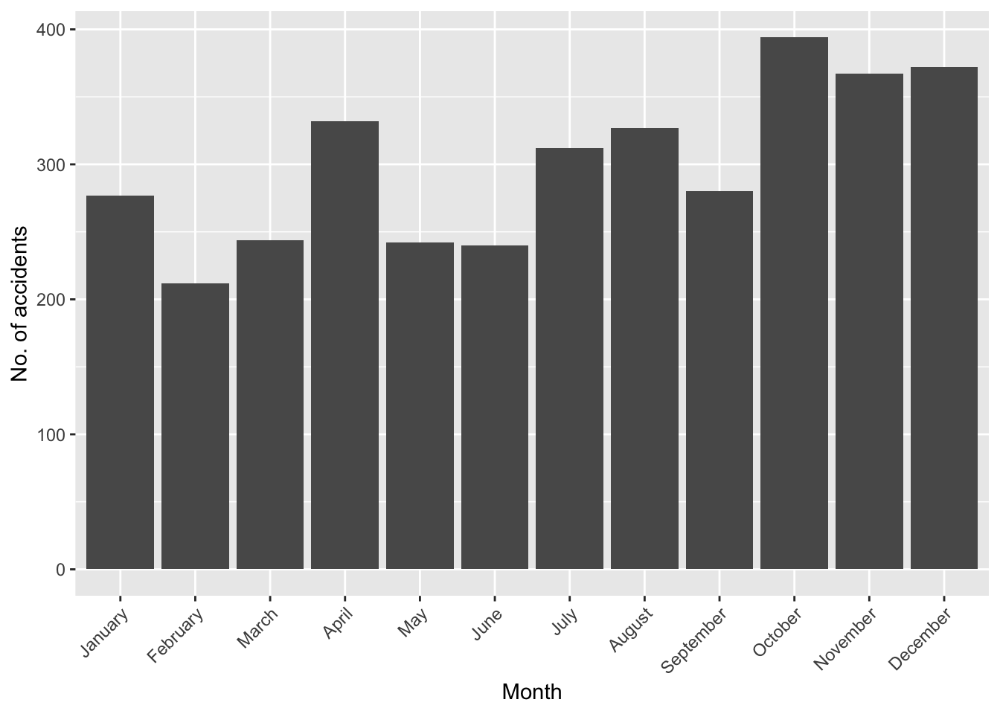
Shaded periods are the Songkran and New Year “seven dangerous days” campaigns.
acc_daily <- acc_bmr_df %>%
count(Date)
ggplot(acc_daily, aes(x = Date, y = n)) +
annotate("rect", xmin = ymd("2022-01-01"), xmax = ymd("2022-01-04"),
ymin = -Inf, ymax = Inf, fill = "red", alpha = 0.2) +
annotate("rect", xmin = ymd("2022-04-11"), xmax = ymd("2022-04-17"),
ymin = -Inf, ymax = Inf, fill = "red", alpha = 0.2) +
annotate("rect", xmin = ymd("2022-12-29"), xmax = ymd("2022-12-31"),
ymin = -Inf, ymax = Inf, fill = "red", alpha = 0.2) +
geom_line() +
labs(x = "Date", y = "No. of accidents per day")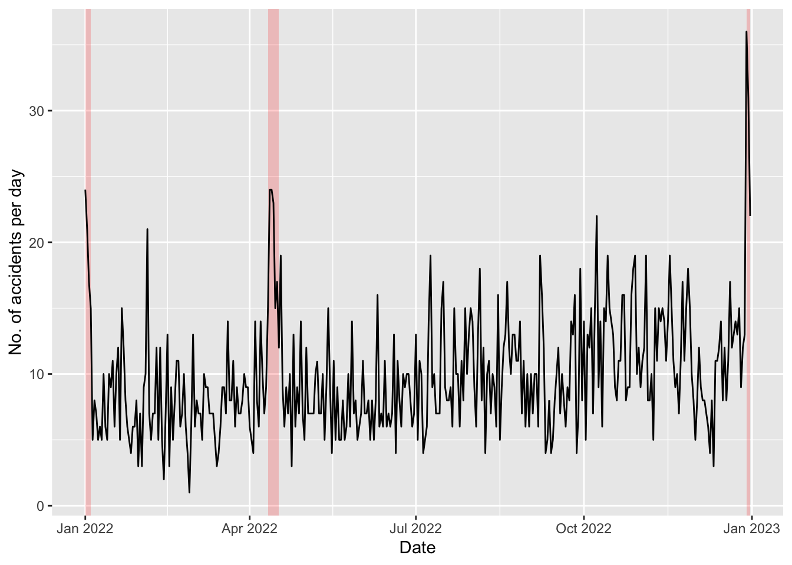
acc_bmr_df %>%
count(Weekday, Hour) %>%
ggplot(aes(x = Hour, y = Weekday, fill = n)) +
geom_tile() +
scale_fill_viridis_c() +
labs(x = "Hour of day", y = NULL, fill = "Accidents")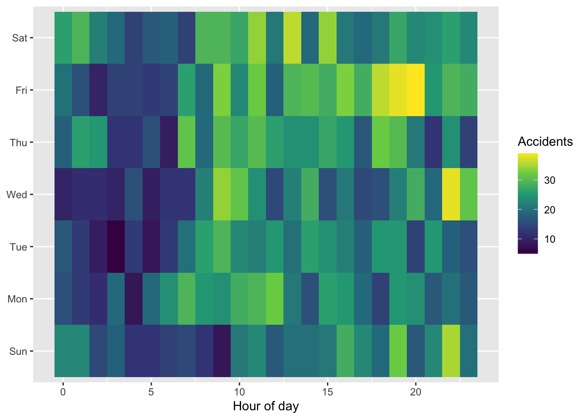
::: Recorded accidents vary over time at three scales. Monthly counts range from about 210 in February to about 395 in October, with generally higher counts in the second half of 2022. Daily counts usually fall between 5 and 15, but the most prominent peaks coincide with the New Year and Songkran campaign periods, reaching about 36 accidents at the end of December. By time of day, accidents are fewest between midnight and 6 a.m. and most frequent from late afternoon to evening, with the highest values on Friday evening. These peaks coincide with holiday travel and commuting periods, but the data alone cannot show why they occur. Counts are not adjusted for traffic volume, cover only recorded accidents on national roads, and come from a single year, so peaks indicate more recorded accidents rather than necessarily higher risk. :::
6.2 Intensity by province
bmr_sf <- bmr_sf %>%
mutate(n_acc = lengths(st_intersects(bmr_sf, acc_bmr_sf))) %>%
mutate(area_km2 = as.numeric(st_area(bmr_sf)) / 1e6) %>%
mutate(acc_per_km2 = n_acc / area_km2)
bmr_sf %>%
st_drop_geometry() %>%
select(shapeName, n_acc, area_km2, acc_per_km2) %>%
arrange(desc(acc_per_km2)) shapeName n_acc area_km2 acc_per_km2
1 Bangkok 1802 1570.7019 1.14725779
2 Samut Prakan 671 952.9092 0.70415941
3 Samut Sakhon 323 839.4175 0.38479063
4 Pathum Thani 491 1513.6408 0.32438344
5 Nonthaburi 174 638.9550 0.27231964
6 Nakhon Pathom 138 2088.4542 0.066077586.3 KDE with automatic bandwidth selection
bw.diggle(accBMR_ppp.km) sigma
0.09230747 bw.ppl(accBMR_ppp.km) sigma
0.4430542 bw.scott(accBMR_ppp.km) sigma.x sigma.y
5.239063 4.078427 kde_accBMR.bw <- density(accBMR_ppp.km,
sigma = bw.diggle,
edge = TRUE,
kernel = "gaussian")
kde_accBMR.ppl <- density(accBMR_ppp.km,
sigma = bw.ppl,
edge = TRUE,
kernel = "gaussian")
kde_accBMR.scott <- density(accBMR_ppp.km,
sigma = bw.scott,
edge = TRUE,
kernel = "gaussian")
par(mfrow = c(1, 3))
plot(kde_accBMR.bw, main = "bw.diggle")
plot(kde_accBMR.ppl, main = "bw.ppl")
plot(kde_accBMR.scott, main = "bw.scott")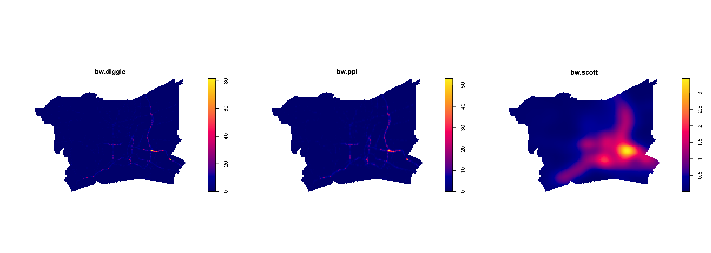
6.4 Bandwidth sensitivity
par(mfrow = c(2, 2))
for (s in c(0.5, 1, 2, 5)) {
plot(density(accBMR_ppp.km, sigma = s, edge = TRUE, kernel = "gaussian"),
main = paste("sigma =", s, "km"))
}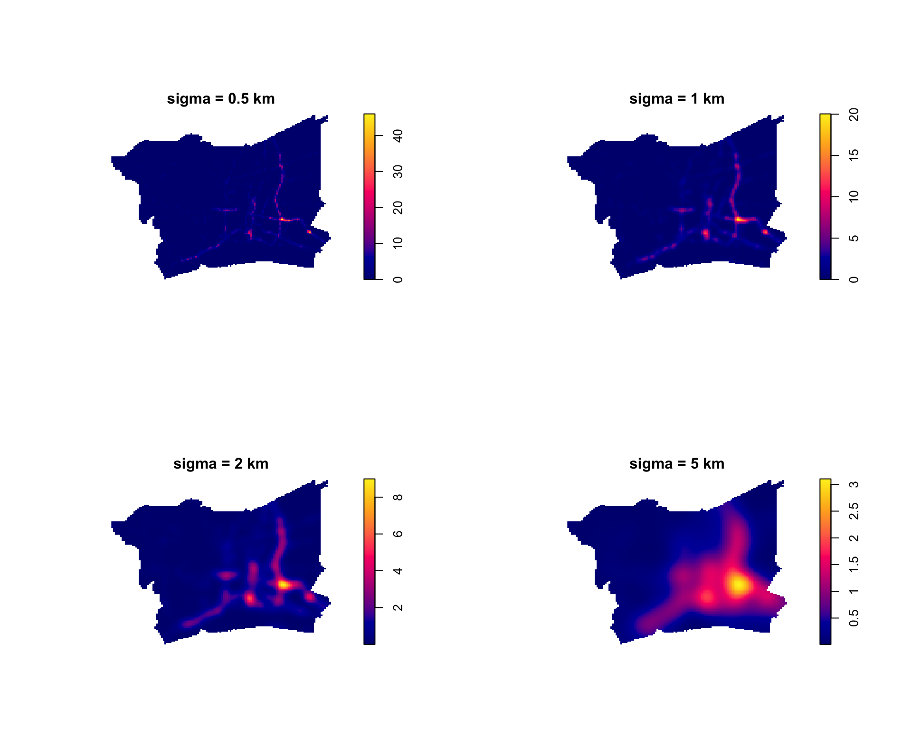
6.5 Fixed vs adaptive bandwidth
kde_accBMR_adaptive <- adaptive.density(accBMR_ppp.km, method = "kernel")
par(mfrow = c(1, 2))
plot(kde_accBMR.ppl, main = "Fixed bandwidth (bw.ppl)")
plot(kde_accBMR_adaptive, main = "Adaptive bandwidth")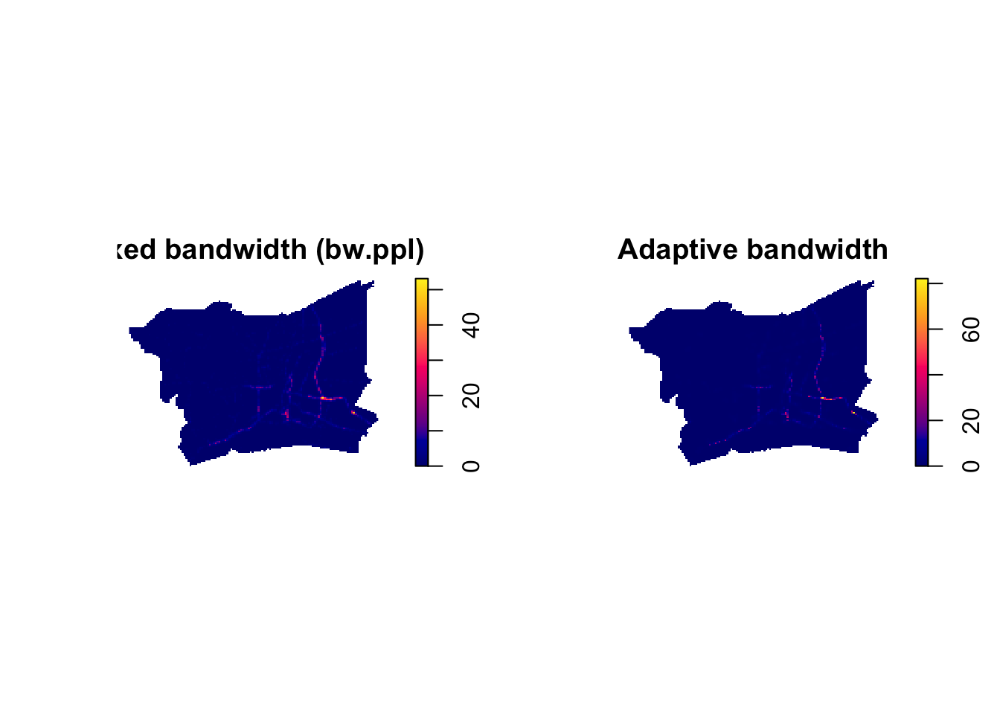
6.6 Mapping the selected KDE with tmap
kde_chosen <- kde_accBMR.ppl
kde_df <- as.data.frame(kde_chosen) %>%
mutate(x = x * 1000, y = y * 1000,
value = pmax(value, 0))
kde_rast <- rast(kde_df, type = "xyz", crs = "EPSG:32647")
tm_shape(kde_rast) +
tm_raster(col.scale = tm_scale_continuous_sqrt(values = "viridis"),
col.legend = tm_legend(title = "Accidents per km²")) +
tm_shape(bmr_sf) +
tm_borders(col = "grey40") +
tm_text("shapeName", size = 0.7, col = "white") +
tm_title("KDE of road accidents, BMR 2022")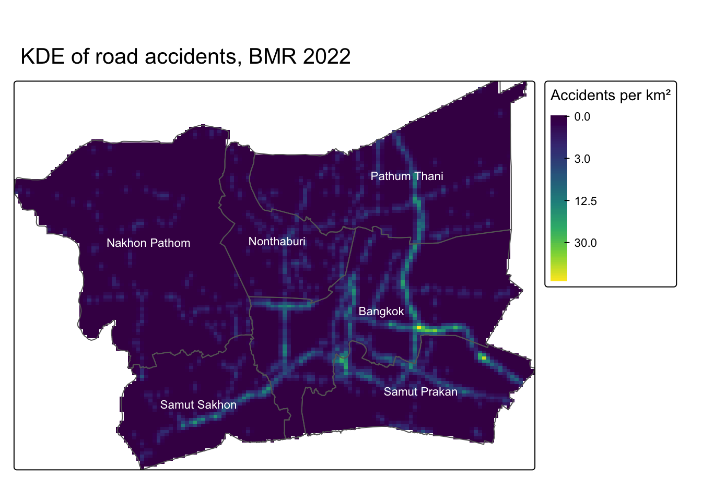
::: Using the bw.ppl bandwidth (0.79 km), estimated accident intensity forms a network of linear corridors rather than broad areas: a north–south corridor through Bangkok into Pathum Thani, an east–west corridor across southern Bangkok into Samut Prakan, and a south-western corridor towards Samut Sakhon, with fainter corridors in Nakhon Pathom. The highest intensity (about 26 accidents per km²) lies in southern Bangkok near the Samut Prakan boundary, with a secondary peak in eastern Samut Prakan. A square-root colour scale is used so that lower-intensity corridors remain visible. Because the data cover only accidents recorded by national road agencies, low intensity in inner Bangkok may reflect missing records rather than safer streets, and planar KDE spreads intensity beyond the roads themselves . :::
6.7 Spatio-temporal KDE
acc_month <- acc_bmr_sf %>%
select(Month_num)
acc_month_ppp <- as.ppp(acc_month)
acc_month_ppp <- rjitter(acc_month_ppp, retry = TRUE, nsim = 1, drop = TRUE)
acc_month_owin <- acc_month_ppp[bmr_owin]
summary(acc_month_owin)Marked planar point pattern: 3598 points
Average intensity 4.731671e-07 points per square unit
Coordinates are given to 10 decimal places
marks are numeric, of type 'double'
Summary:
Min. 1st Qu. Median Mean 3rd Qu. Max.
1.000 4.000 7.000 6.994 10.000 12.000
Window: polygonal boundary
single connected closed polygon with 1699 vertices
enclosing rectangle: [587130.4, 712441.7] x [1484748.9, 1579087.2] units
(125300 x 94340 units)
Window area = 7604080000 square units
Fraction of frame area: 0.643st_kde <- spattemp.density(acc_month_owin)
summary(st_kde)Spatiotemporal Kernel Density Estimate
Bandwidths
h = 4885.595 (spatial)
lambda = 0.0285 (temporal)
No. of observations
3598
Spatial bound
Type: polygonal
2D enclosure: [587130.4, 712441.7] x [1484749, 1579087]
Temporal bound
[1, 12]
Evaluation
128 x 128 x 12 trivariate lattice
Density range: [9.799842e-22, 2.843724e-09]tims <- 1:12
par(mfcol = c(3, 4))
for (i in tims) {
plot(st_kde, i,
override.par = FALSE,
fix.range = TRUE,
main = paste("KDE at month", i))
}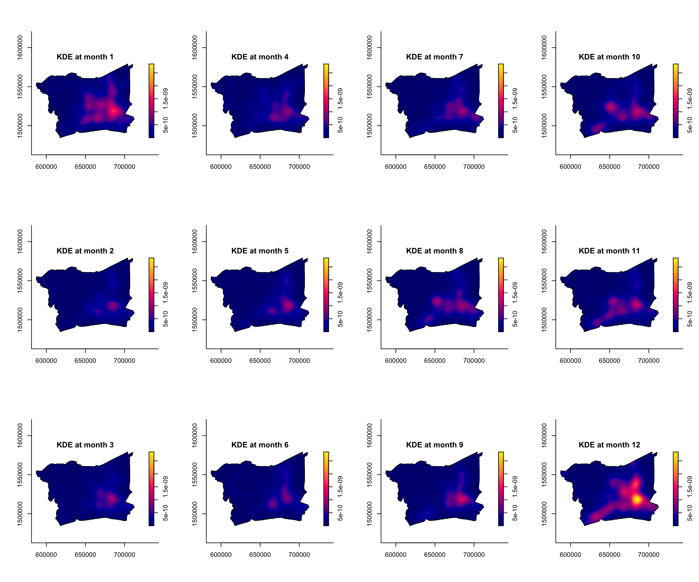
::: The spatio-temporal KDE shows that the location of the main accident hotspot, in south-eastern Bangkok near the Samut Prakan boundary, is stable throughout 2022, while its intensity varies by month. Intensity is highest in December and relatively high in January, and lowest in February, March, May and June, consistent with the monthly counts in Section 6.1. From around August, a secondary concentration towards Samut Sakhon also becomes more visible. The automatically selected spatial bandwidth (about 4.9 km) is much larger than the one used in Section 6.6, so these maps show broad hotspots rather than individual road corridors. The temporal bandwidth is very small relative to the monthly time unit, so each panel mainly reflects that month’s accidents with little smoothing between months. Monthly aggregation may also hide short peaks such as the Songkran week. :::
6.8 Spatio-temporal KDE by day of year
acc_bmr_sf <- acc_bmr_sf %>%
mutate(DayofYear = yday(incident_datetime))
acc_yday_ppp <- acc_bmr_sf %>%
select(DayofYear) %>%
as.ppp()
acc_yday_ppp <- rjitter(acc_yday_ppp, retry = TRUE, nsim = 1, drop = TRUE)
acc_yday_owin <- acc_yday_ppp[bmr_owin]
summary(acc_yday_owin)Marked planar point pattern: 3599 points
Average intensity 4.732986e-07 points per square unit
Coordinates are given to 10 decimal places
marks are numeric, of type 'double'
Summary:
Min. 1st Qu. Median Mean 3rd Qu. Max.
1.0 104.0 208.0 197.5 292.0 365.0
Window: polygonal boundary
single connected closed polygon with 1699 vertices
enclosing rectangle: [587130.4, 712441.7] x [1484748.9, 1579087.2] units
(125300 x 94340 units)
Window area = 7604080000 square units
Fraction of frame area: 0.643set.seed(1234)
BOOT.spattemp(acc_yday_owin)Initialising...Done.
Optimising...
h = 4883.773 ; lambda = 23.86965
h = 5372.15 ; lambda = 23.86965
h = 4883.773 ; lambda = 512.2469
h = 5005.867 ; lambda = 268.0583
h = 5066.914 ; lambda = 145.964
h = 5097.438 ; lambda = 84.91681
h = 4609.061 ; lambda = 84.91681
h = 4227.516 ; lambda = 115.4404
h = 4441.181 ; lambda = 176.4876
h = 4773.125 ; lambda = 62.02412
h = 3903.203 ; lambda = 92.54771
h = 3306.085 ; lambda = 96.36315
h = 2760.476 ; lambda = 149.7794
h = 3263.639 ; lambda = 127.8406
h = 2342.208 ; lambda = 108.7634
h = 2813.535 ; lambda = 110.4326
h = 2855.982 ; lambda = 78.95517
h = 2652.153 ; lambda = 54.51246
h = 3348.532 ; lambda = 64.88571
h = 3214.783 ; lambda = 76.27244
h = 2764.679 ; lambda = 58.86446
h = 3170.734 ; lambda = 86.98848
h = 2900.031 ; lambda = 68.23913
h = 2967.707 ; lambda = 72.92647
h = 2608.905 ; lambda = 75.6092
h = 3063.314 ; lambda = 76.10663
Done. h lambda
3063.31354 76.10663 kde_yday <- spattemp.density(acc_yday_owin, h = 3062, lambda = 76)
summary(kde_yday)Spatiotemporal Kernel Density Estimate
Bandwidths
h = 3062 (spatial)
lambda = 76 (temporal)
No. of observations
3599
Spatial bound
Type: polygonal
2D enclosure: [587130.4, 712441.7] x [1484749, 1579087]
Temporal bound
[1, 365]
Evaluation
128 x 128 x 365 trivariate lattice
Density range: [7.457342e-19, 5.14256e-12]tims <- c(46, 105, 196, 288)
par(mfcol = c(2, 2))
for (i in tims) {
plot(kde_yday, i,
override.par = FALSE,
fix.range = TRUE,
main = paste("KDE at day", i))
}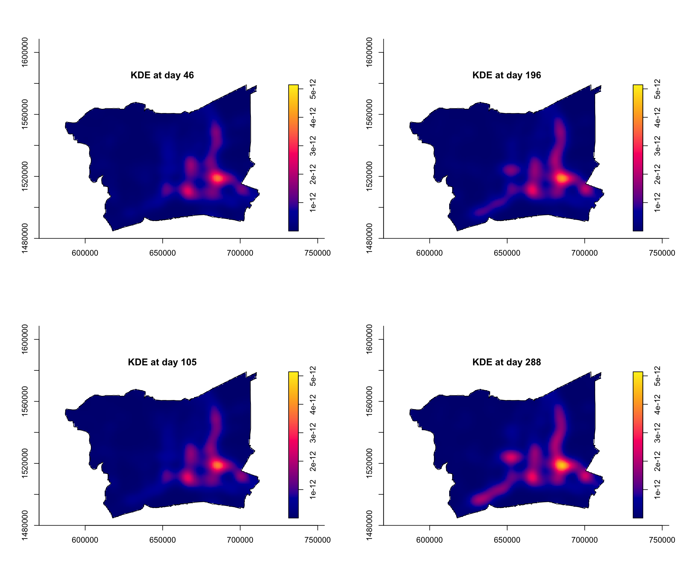
::: Using day of year with bootstrap-selected bandwidths (h ≈ 3.1 km, lambda ≈ 76 days), the STKDE shows a stable core and a changing periphery. The main hotspot in south-eastern Bangkok near the Samut Prakan boundary, and the north–south corridor into Pathum Thani, persist throughout 2022. In contrast, the south-western corridor towards Samut Sakhon is faint in February and April but becomes increasingly prominent in July and October, when overall intensity is also higher, consistent with the monthly counts in Section 6.1. Compared with the monthly STKDE in Section 6.7, the smaller spatial bandwidth preserves more of the corridor structure. However, the 76-day temporal bandwidth pools accidents over roughly two to three months, so short-lived peaks such as the Songkran and New Year holidays are smoothed out; the daily time series in Section 6.1 remains the evidence for those peaks. :::
7. Second-order Spatial Point Patterns Analysis
set.seed(1234)7.1 Clark-Evans test
H0: accidents are randomly distributed (CSR). H1: accidents are clustered.
clarkevans.test(accBMR_ppp.km,
correction = "none",
alternative = c("clustered"),
method = "MonteCarlo",
nsim = 99)
Clark-Evans test
No edge correction
Monte Carlo test based on 99 simulations of CSR with fixed n
data: accBMR_ppp.km
R = 0.30151, p-value = 0.01
alternative hypothesis: clustered (R < 1)7.2 G-function with CSR envelope
G_acc.csr <- envelope(accBMR_ppp.km, Gest, nsim = 99)Generating 99 simulated realisations of CSR ...
1, 2, 3, 4, 5, 6, 7, 8, 9, 10, 11, 12, 13, 14, 15, 16, 17, 18, 19, 20,
21, 22, 23, 24, 25, 26, 27, 28, 29, 30, 31, 32, 33, 34, 35, 36, 37, 38, 39, 40,
41, 42, 43, 44, 45, 46, 47, 48, 49, 50, 51, 52, 53, 54, 55, 56, 57, 58, 59, 60,
61, 62, 63, 64, 65, 66, 67, 68, 69, 70, 71, 72, 73, 74, 75, 76, 77, 78, 79, 80,
81, 82, 83, 84, 85, 86, 87, 88, 89, 90, 91, 92, 93, 94, 95, 96, 97, 98,
99.
Done.plot(G_acc.csr)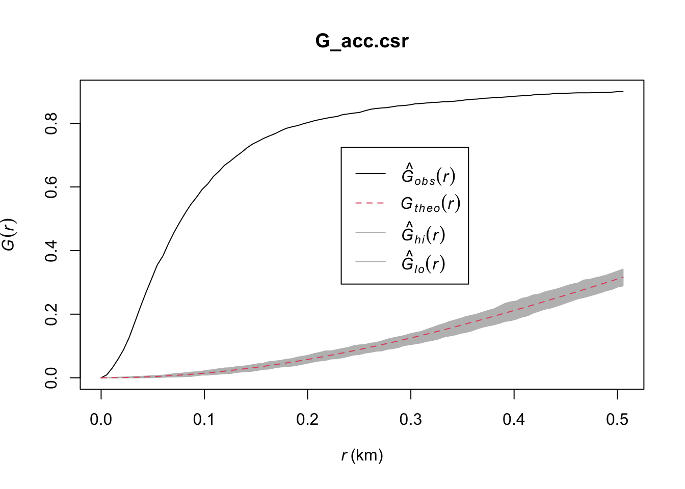
7.3 L-function with CSR envelope
H0: accidents follow a homogeneous Poisson process (CSR). Assumption: the process is stationary, i.e. intensity is constant across BMR, which Section 6 already suggests is unrealistic. With 99 simulations and rank = 1, the global envelope corresponds to a significance level of 0.01.
r_km <- seq(0, 10, by = 0.1)
L_acc.csr <- envelope(accBMR_ppp.km, Lest, nsim = 99,
rank = 1, glocal = TRUE,
r = r_km,
correction = "border")Generating 99 simulated realisations of CSR ...
1, 2, 3, 4, 5, 6, 7, 8, 9, 10, 11, 12, 13, 14, 15, 16, 17, 18, 19, 20,
21, 22, 23, 24, 25, 26, 27, 28, 29, 30, 31, 32, 33, 34, 35, 36, 37, 38, 39, 40,
41, 42, 43, 44, 45, 46, 47, 48, 49, 50, 51, 52, 53, 54, 55, 56, 57, 58, 59, 60,
61, 62, 63, 64, 65, 66, 67, 68, 69, 70, 71, 72, 73, 74, 75, 76, 77, 78, 79, 80,
81, 82, 83, 84, 85, 86, 87, 88, 89, 90, 91, 92, 93, 94, 95, 96, 97, 98,
99.
Done.plot(L_acc.csr, . - r ~ r, xlab = "d (km)", ylab = "L(d)-r")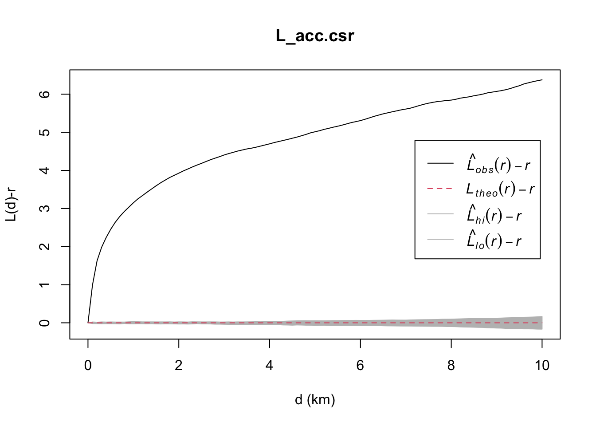
7.4 Inhomogeneous L-function
H0: accidents follow an inhomogeneous Poisson process whose intensity equals the KDE surface, i.e. no interaction beyond what uneven intensity explains. Assumptions: the KDE surface is a good estimate of the true intensity, and the process is second-order intensity-reweighted stationary. Because intensity and clustering cannot be fully separated from one pattern, the result depends on the bandwidth, which is tested in 7.5.
lambda_acc <- density(accBMR_ppp.km, sigma = bw.ppl, positive = TRUE)L_inhom.csr <- envelope(accBMR_ppp.km, Linhom, nsim = 39,
rank = 1, glocal = TRUE,
simulate = expression(rpoispp(lambda_acc)),
lambda = lambda_acc,
r = r_km,
correction = "bord.modif")Generating 39 simulations by evaluating expression ...1, 2, 3, 4, 5, 6, 7, 8, 9, 10, 11, 12, 13, 14, 15, 16, 17, 18, 19, 20,21, 22, 23, 24, 25, 26, 27, 28, 29, 30, 31, 32, 33, 34, 35, 36, 37, 38,
39.
Done.plot(L_inhom.csr, . - r ~ r, xlab = "d (km)", ylab = "L_inhom(d)-r")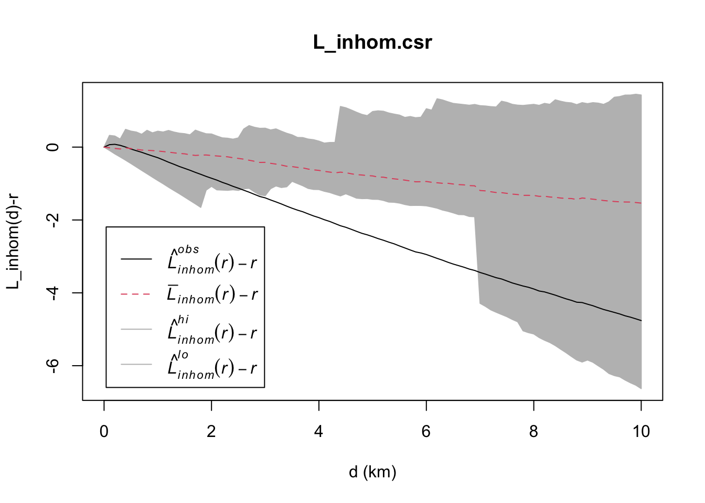
7.5 Sensitivity of the inhomogeneous L-function to bandwidth
lambda_acc2 <- density(accBMR_ppp.km, sigma = 2, positive = TRUE)L_inhom2.csr <- envelope(accBMR_ppp.km, Linhom, nsim = 39,
rank = 1, glocal = TRUE,
simulate = expression(rpoispp(lambda_acc2)),
lambda = lambda_acc2,
r = r_km,
correction = "bord.modif")Generating 39 simulations by evaluating expression ...1, 2, 3, 4, 5, 6, 7, 8, 9, 10, 11, 12, 13, 14, 15, 16, 17, 18, 19, 20,21, 22, 23, 24, 25, 26, 27, 28, 29, 30, 31, 32, 33, 34, 35, 36, 37, 38,
39.
Done.plot(L_inhom2.csr, . - r ~ r, xlab = "d (km)", ylab = "L_inhom(d)-r",
main = "Inhomogeneous L, sigma = 2 km")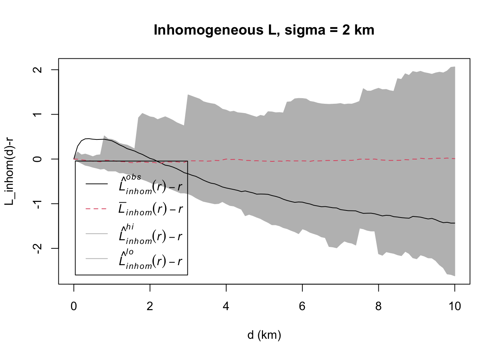
plot(L_inhom2.csr, . - r ~ r, xlim = c(0, 2), xlab = "d (km)", ylab = "L_inhom(d)-r",
main = "Inhomogeneous L, sigma = 2 km (0-2 km)")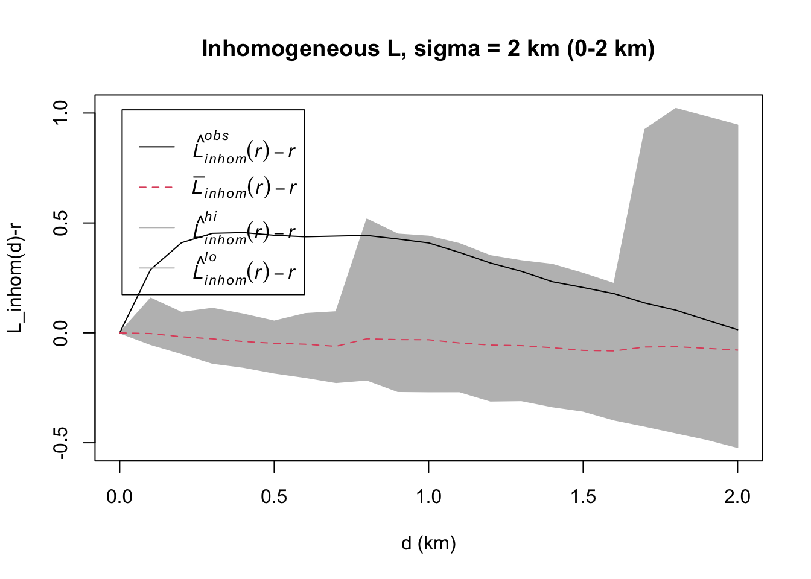
write_rds(L_acc.csr, "data/rds/L_acc_csr.rds")
write_rds(L_inhom.csr, "data/rds/L_inhom_csr.rds")
write_rds(L_inhom2.csr, "data/rds/L_inhom2_csr.rds")::: Against CSR, all tests indicate strong clustering: the Clark-Evans ratio is 0.30 (p = 0.01), and the G- and L-functions lie far above their envelopes across 0–10 km. However, CSR ignores the uneven intensity shown in Section 6. Against an inhomogeneous Poisson model based on the KDE surface, most of this clustering disappears. With the bw.ppl intensity (0.79 km), the observed curve stays close to the upper envelope at short distances and falls below it at 6–10 km, suggesting the fine-scale intensity absorbs much of the clustering. With a 2 km intensity, the observed curve exceeds the global envelope below about 0.3 km (α = 0.025), indicating significant short-range clustering beyond the corridor pattern, such as repeated accidents at the same locations. Most apparent clustering therefore reflects concentration along road corridors, with additional interaction limited to a few hundred metres and sensitive to bandwidth and the small number of simulations. :::
7.6 Spatio-temporal K-function (STIKhat)
coords <- st_coordinates(acc_bmr_sf)
acc_df <- data.frame(
x = coords[, 1],
y = coords[, 2],
t = acc_bmr_sf$DayofYear)
acc_stpp <- as.3dpoints(acc_df)
class(acc_stpp)[1] "stpp"set.seed(1234)
acc_stik <- STIKhat(acc_stpp)
plotK(acc_stik)
NoteInterpretation
8. Value-added Analysis: Network-constrained Point Patterns
Accidents can only occur on roads, so planar CSR assumes events could happen anywhere in the window, including rivers and fields. This section tests whether conclusions hold when the network is the study space.
8.1 Importing major roads within BMR
Only roads intersecting BMR are read (wkt_filter), because the full Thailand layer is over 600 MB. The filter is in EPSG:4326 to match the OSM file.
bmr_wkt <- bmr_union %>%
st_transform(crs = 4326) %>%
st_as_text()
major_roads <- c("motorway", "motorway_link", "trunk", "trunk_link",
"primary", "primary_link", "secondary", "secondary_link",
"tertiary", "tertiary_link")
roads_bmr <- st_read(dsn = "data/geospatial",
layer = "gis_osm_roads_free_1",
wkt_filter = bmr_wkt) %>%
filter(fclass %in% major_roads) %>%
select(osm_id, fclass, name) %>%
st_transform(crs = 32647) %>%
st_cast("LINESTRING")Reading layer `gis_osm_roads_free_1' from data source
`/Users/wangxiaohan/ISSS626-GAA/Take-home_Ex/Take-home_Ex01/data/geospatial'
using driver `ESRI Shapefile'
Simple feature collection with 621938 features and 10 fields
Geometry type: LINESTRING
Dimension: XY
Bounding box: xmin: 99.76608 ymin: 13.43053 xmax: 101.0062 ymax: 14.32775
Geodetic CRS: WGS 84write_rds(roads_bmr, "data/rds/roads_bmr.rds")table(st_geometry_type(roads_bmr))
GEOMETRY POINT LINESTRING POLYGON
0 0 29407 0
MULTIPOINT MULTILINESTRING MULTIPOLYGON GEOMETRYCOLLECTION
0 0 0 0
CIRCULARSTRING COMPOUNDCURVE CURVEPOLYGON MULTICURVE
0 0 0 0
MULTISURFACE CURVE SURFACE POLYHEDRALSURFACE
0 0 0 0
TIN TRIANGLE
0 0 count(st_drop_geometry(roads_bmr), fclass, sort = TRUE) fclass n
1 secondary 7339
2 primary 6273
3 tertiary 5725
4 primary_link 2452
5 secondary_link 2073
6 motorway_link 1720
7 trunk 1464
8 motorway 1268
9 trunk_link 668
10 tertiary_link 4258.2 Distance from accidents to the nearest major road
nearest_id <- st_nearest_feature(acc_bmr_sf, roads_bmr)
acc_bmr_sf <- acc_bmr_sf %>%
mutate(dist_road = as.numeric(st_distance(acc_bmr_sf,
roads_bmr[nearest_id, ],
by_element = TRUE)))
summary(acc_bmr_sf$dist_road) Min. 1st Qu. Median Mean 3rd Qu. Max.
0.0006 1.9207 3.9823 5.6164 6.8010 1303.7791 ggplot(acc_bmr_sf, aes(x = dist_road)) +
geom_histogram(bins = 50) +
geom_vline(xintercept = 100, linetype = "dashed", colour = "red") +
labs(x = "Distance to nearest major road (m)", y = "No. of accidents")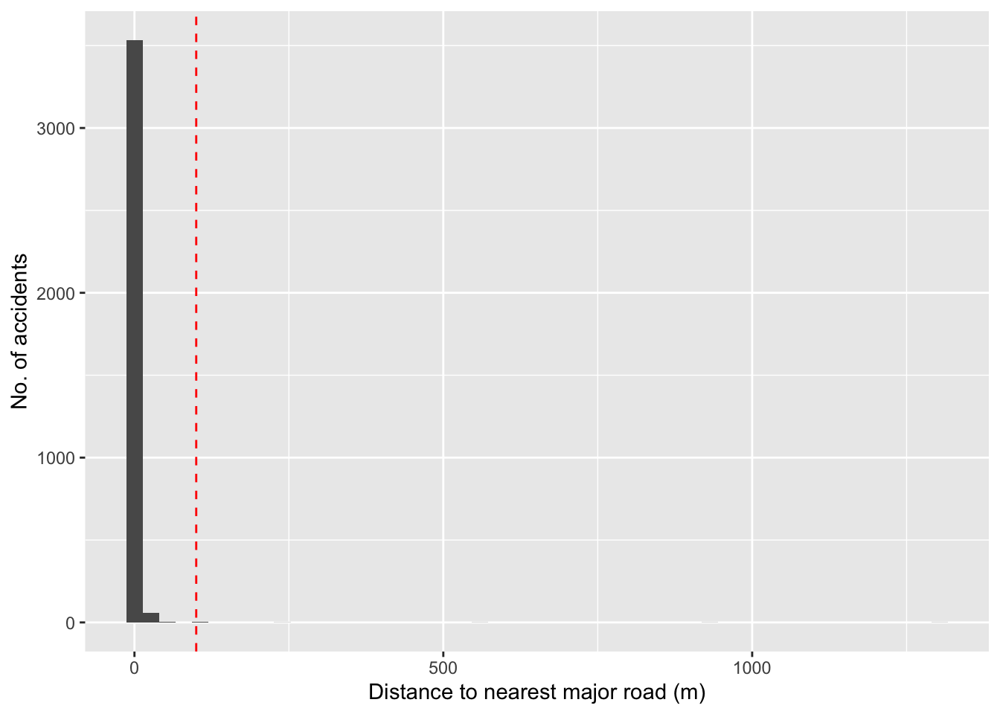
Accidents more than 100 m from a major road are excluded from the network analysis, as they are likely on minor roads or mislocated.
acc_net_sf <- acc_bmr_sf %>%
filter(dist_road <= 100)
nrow(acc_net_sf)[1] 35948.3 Network KDE
lixels <- lixelize_lines(roads_bmr, 500, mindist = 250)
samples <- lines_center(lixels)densities <- nkde(roads_bmr,
events = acc_net_sf,
w = rep(1, nrow(acc_net_sf)),
samples = samples,
kernel_name = "quartic",
bw = 1000,
div = "bw",
method = "simple",
digits = 1,
tol = 1,
grid_shape = c(3, 3),
max_depth = 8,
agg = 5,
sparse = TRUE,
verbose = FALSE)
lixels$density <- densities * 1000
write_rds(lixels, "data/rds/lixels.rds")lixels <- lixels %>%
arrange(density)
tm_shape(bmr_sf) +
tm_polygons(fill = "grey95") +
tm_shape(lixels) +
tm_lines(col = "density",
col.scale = tm_scale_continuous_sqrt(values = "viridis"),
col.legend = tm_legend(title = "Network KDE\n(relative density)"),
lwd = 1.5) +
tm_title("Network KDE of road accidents, BMR 2022")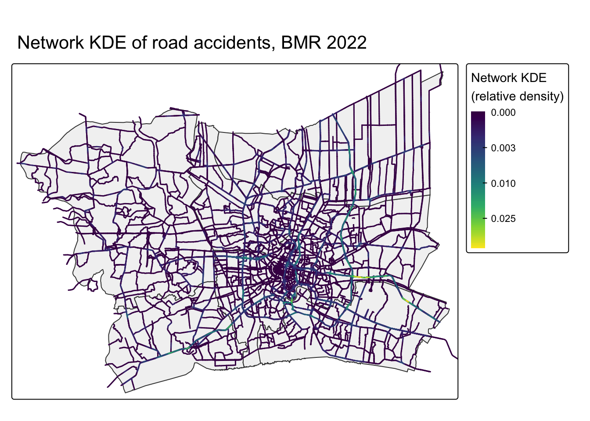
::: Network KDE (quartic kernel, 1 km bandwidth measured along the network) estimates accident density on each road segment rather than across continuous space. Almost all accidents (3,594 of 3,599) lie within 100 m of a major road, supporting a network-based approach. Density is concentrated on a small number of specific roads: a north–south corridor through eastern Bangkok into Pathum Thani, roads across southern Bangkok into Samut Prakan, where the highest values occur, and a south-western corridor towards Samut Sakhon. Most of the major road network, including much of inner Bangkok, shows near-zero density. This refines the planar KDE in Section 6.6: instead of broad hotspots, accidents concentrate on particular roads, which is more directly useful for targeting interventions. Values are relative densities rather than accidents per km, and reflect only accidents recorded by national road agencies, so low density on city streets may reflect missing records. :::
8.4 Network K-function (Bangkok)
The network K-function is restricted to Bangkok because computing it on the full BMR network is very slow; this is a computational decision and should be stated as a limitation.
bkk_sf <- bmr_sf %>%
filter(shapeName == "Bangkok")
roads_bkk <- roads_bmr %>%
st_filter(bkk_sf)
acc_bkk <- acc_net_sf %>%
st_filter(bkk_sf)
nrow(acc_bkk)[1] 1801kfun_acc <- kfunctions(roads_bkk,
acc_bkk,
start = 0,
end = 5000,
step = 100,
width = 200,
nsim = 39,
resolution = 50,
verbose = FALSE,
conf_int = 0.05)
write_rds(kfun_acc, "data/rds/kfun_acc.rds")kfun_acc$plotk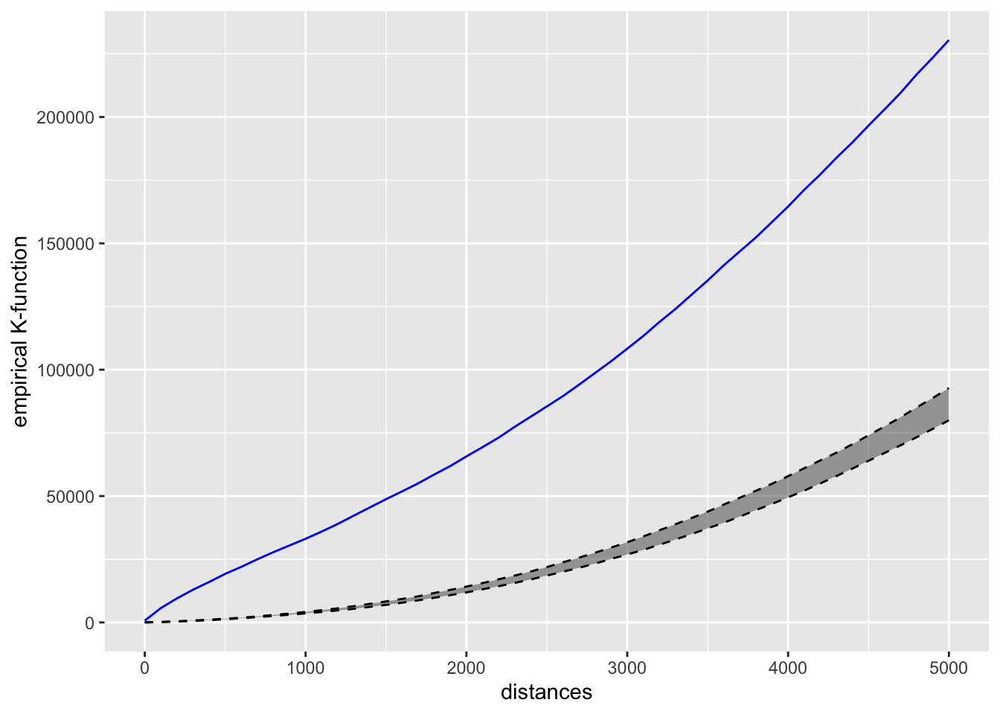
kfun_acc$plotg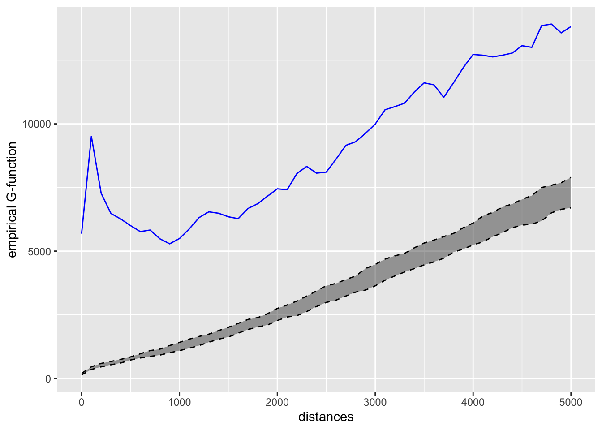
NoteInterpretation
9. Integrated Findings and Discussion
What does the first-order analysis reveal? Recorded accidents are highly uneven in space and time. Intensity is concentrated along a few linear corridors rather than broad areas, with the strongest hotspot in southern Bangkok near the Samut Prakan boundary (Section 6.6). Network KDE confirms that density is confined to specific roads (Section 8.3). Temporally, counts are higher in the second half of 2022 (peaking in October), spike during the New Year and Songkran campaign periods, and are highest from late afternoon to evening (Section 6.1).
What does the second-order analysis reveal? Against CSR, accidents are strongly clustered at all distances up to 10 km (Clark-Evans R = 0.30). Against an inhomogeneous Poisson model, most of this clustering disappears, but significant clustering remains below about 0.3 km when intensity is estimated with a 2 km bandwidth (Section 7.5).
How do they complement each other? The first-order results explain most of the apparent clustering: accidents cluster mainly because they are concentrated on a few corridors. The second-order results add that, within those corridors, accidents also recur within a few hundred metres, consistent with the 520 accidents sharing exact locations (Section 5.9).
Are the findings consistent across analytical views? The location of the main hotspot and corridors is robust across bandwidths (0.5–5 km), spatio-temporal KDE and network KDE. The strength of clustering is not: it depends on the null model and the bandwidth used to estimate intensity. [8.4: state whether the network K-function supports or contradicts the planar results.]
What assumptions or limitations matter? The most important are the observation process (only national road agencies’ records), the absence of traffic-volume data, and sensitivity to bandwidth; these are detailed in Section 11.
Are there alternative explanations? Concentrations along corridors may reflect higher traffic volumes rather than higher risk per vehicle. Repeated locations may partly reflect recording practices, such as locating accidents at fixed reference points, rather than true hotspots. Low intensity in inner Bangkok may reflect missing records from city-managed streets rather than safer roads.
10. Public-safety Planning and Management Implications
Supported directly by the analysis
Prioritising corridors rather than areas. Network KDE shows that recorded accidents are concentrated on a small number of specific roads, particularly the corridors across southern Bangkok into Samut Prakan, the north–south corridor into Pathum Thani, and the south-western corridor towards Samut Sakhon. Road-safety audits, enforcement and engineering reviews can therefore be targeted at identified road segments rather than spread evenly across provinces.
Focusing on repeated locations. The significant short-range clustering below about 0.3 km, together with 520 accidents sharing exact locations, indicates that some sites experience repeated accidents. These locations are natural candidates for site-level investigation, such as junction design, signage and lighting.
Timing interventions. Accidents are more frequent in the second half of the year, during the New Year and Songkran periods, and from late afternoon to evening, especially on Fridays. Enforcement and campaign resources can be scheduled to match these periods.
Monitoring emerging corridors. The south-western corridor towards Samut Sakhon becomes more prominent from mid-year onwards (Section 6.8), suggesting it should be monitored over future years to see whether this pattern persists.
Emergency response. Because accidents are concentrated along identifiable corridors, the locations of ambulance and rescue units can be evaluated against these corridors, for example by checking response distances along the network.
Requiring additional information
Assessing risk rather than counts. The analysis identifies where recorded accidents concentrate, not where roads are most dangerous. Traffic volume data would be needed to convert counts into accident rates per vehicle-kilometre before concluding that a corridor is high-risk.
Explaining causes. The analysis does not show why accidents concentrate on these roads or at these times. Attributes such as presumed cause, vehicle type and road design, together with field inspections, would be needed before designing specific engineering or behavioural interventions.
Covering city streets. All records come from national road agencies. Integrating data from the Bangkok Metropolitan Administration would be necessary before drawing conclusions about inner Bangkok, where low intensity may reflect missing records.
Evaluating interventions. Multi-year data (for example, 2019–2022) would be needed to confirm whether the identified corridors and seasonal patterns are stable, and to evaluate whether past campaigns have had any effect.
11. Limitations
- Observation process. All records come from national road agencies (Department of Highways 80.1%, Expressway Authority 13.1%, Department of Rural Roads 6.8%). Accidents on city-managed streets are likely missing, so patterns describe recorded accidents on these road types only.
- No exposure data. Without traffic volumes, concentrations cannot be interpreted as higher risk.
- Location quality. 189 records lacked coordinates, and 520 accidents shared exact locations, possibly reflecting fixed reference points. Jittering removes duplicates but introduces small artificial displacements.
- Single year. Only 2022 is analysed, so patterns may not be stable across years.
- Bandwidth sensitivity. KDE maps and especially the inhomogeneous L-function depend on bandwidth; results were tested at several bandwidths but not all choices can be exhausted.
- Intensity estimated from the same data. The inhomogeneous null model uses a KDE of the same accidents, which can absorb genuine clustering, and the two border-correction estimators gave different results.
- Limited simulations. The inhomogeneous envelopes use 39 simulations, giving jagged envelopes and limited precision.
- Temporal smoothing. The day-of-year STKDE uses a 76-day temporal bandwidth, which smooths out short holiday peaks; the space–time K-function assumes constant intensity.
- Network data. The OSM road network is a 2026 extract, whereas accidents are from 2022, and only major road classes were included. The network K-function was restricted to Bangkok for computational reasons, and network KDE values are relative densities.
- Study window. BMR is defined by six provincial boundaries; a different definition of the metropolitan area could change edge effects and intensity estimates.